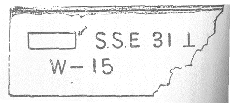

| 琥珀のパイプ | |
| 甲賀 三郎 | |
| (2012) | |
琥珀のパイプ
甲賀三郎
私は今でもあの夜の光景
を思い出すとゾットする。それは東京に大地震があって間もない頃であった。
その日の午後十時過ぎになると、果して空模様が怪しくなって来て、颱風
の音と共にポツリポツリと大粒の雨が落ちて来た。其の朝私は新聞に「今夜半颱風帝都に襲来せん」とあるのを見たので役所にいても終日気に病んでいたのだが、不幸にも気象台の観測は見事に適中したのであった。気に病んでいたと云うのは其の夜十二時から二時まで夜警を勤めねばならなかったからで、暴風雨中の夜警と云うものは、どうも有難いものではない。一体この夜警という奴は、つい一月許
り前の東都の大震災から始まったもので、あの当時あらゆる交通機関が杜絶
して、いろ〳〵の風説が起った時に、焼け残った山ノ手の人々が手に手に獲物［＃「獲物」はママ］
を持って、所謂
自警団なるものを組織したのが始まりである。
白状するが、私はこの渋谷町の高台から遙
に下町の空に、炎々と漲
ぎる白煙を見、足許には道玄坂を上へ上へと逃れて来る足袋はだしに、泥々の衣物を着た避難者の群を見た時には、実際この世はどうなる事かと思った。そうしていろ〳〵の恐しい噂に驚かされて、白昼に伝家の一刀を横
えて、家の周囲
を歩き廻った一人である。
さてこの自警団は幾日か経ってゆく内に、漸
く人心も落ち着いて来て、何時
か兇器を持つ事を禁ぜられ、やがて昼間の警戒も廃せられたが、さて夜の警戒と云うものは中々止めにならないのである。つまり自警団がいつか夜警団となった訳で幾軒かのグループで各戸から一人宛
の男を出し、一晩何人と云う定
めで、順番にそのグループの家々の周囲を警戒するので、後には警視庁の方でも廃止を賛成し、団員のうちでも随分反対者があったのであるが、投票の結果は何時も多数で存続と定まるものである。私の如きも××省の書記を勤め、もうやがて恩給もつこうと云う四十幾つの身で、家内のほかに男とてもなし、頗
る迷惑を感じながら、凡
そ一週間に一度は夜中に拍子木を叩かねばならないのであった。
さてその夜の話である。十二時の交替頃から暴風雨
はいよ〳〵本物になって来た。私は交替時間に少し遅れて出て行くともう前の番の人は帰った後で、退役陸軍大佐の青木進也と、新聞記者と自称する松本順三と云う青年との二人が、不完全な番小屋に外套を着たまゝ腰をかけて待っていた。この青木と云うのは云わばこの夜警団の団長と云う人で、記者は――多分探訪記者であろう――私の家の二三軒さきの家へ下町から避難して来ている人であった。夜警団の唯一の利益と云うべきものは、山ノ手の所謂知識階級と称する、介殻
――大きいのは栄螺
位、小さいのは蛤
位の――見たいな家に猫の額
よりまだ狭い庭を垣根で仕切って、隣の庭がみえても見えない振りをしながら、隣同志でも話をした事のないと云う階級の、習慣を破って兎に角一区画内の主人同志が知り合いになったと云う事と、それに各方面から避難して来ている人々も加わって来るので、いろ〳〵の職業に従事している人々から、いろ〳〵の知識が得られると云う事であろう、――然しこの知識はあまり正確なものではないので後には「あゝ夜警話か」と云ったような程度で片付けられるようになったが。
青木は年輩は私より少し上かと思われる人だが、熱心な夜警団の支持者で、兼ねて軍備拡張論者である。松本は若い丈
けに夜警団廃止の急先鋒、軍備縮小論者と云うのであるから、耐
らない。三十分置きに拍子木を叩いて廻る合間にピュウ〳〵と吹き荒
んでいる嵐にも負けないような勢
で議論を闘わすのであった。
「いや御尤もじゃが」青木大佐は云った。「兎に角あの震災の最中にじゃ、竹槍や抜刀を持った自警団の百人は、五人の武装した兵隊に如
かなかったのじゃ」
「それだから軍隊が必要だとは云えますまい」新聞記者は云った。「つまり今迄の陸軍はあまりに精兵主義で、軍隊だけが訓練があればよいと思っていたのです。我々民衆は余りに訓練がなかった。殊に山ノ手の知識階級などは、口ばかり発達していてお互に人の下につく事を嫌がり、全
で団体行動など出来やしない。自警団が役に立たないと云う事と、軍隊が必要であると云う事は別問題です」
「然し、いくら君でも、地震後軍隊の働いた事は認めるじゃろう」
「そりゃ認めますとも」青年は云った。「けれども、その為に軍備縮少は考えものだなんて云う議論は駄目ですよ。一体今度の震災で物質文明が脆
くも自然に負かされたと云う議論があるようだが、以っての外の事です。吾人の持っている文化は今度の地震位で破壊せられるものじゃありませんよ。現にビクともしないで残っている建物があるじゃありませんか、吾人の持っている科学を完全に適用さえすれば、或程度まで自然の暴虐に堪える事が出来るのです。吾人は本当の文化を帝都に布
かなかったのです。恐らく日露戦役後に費やされた軍備費の半
が、帝都の文化施設に費
われていたら、帝都も今回のような惨害は受けなかったでしょう。もうこの上は軍備縮小あるのみですよ」
私は青年のこの大議論を、うと〳〵と暴風雨の音とチャンポンに聞きながら、居眠りをしていた。所が突然青木の大きな声が聞えたのでスッカリ眼を醒
まされた。
「いや、どうあっても夜警団を廃する事は出来ない。殊にじゃ善悪
は兎に角、どの家でも犠牲を払って夜警を勤めているのに、福島と云う奴は怪
しからん奴じゃ。あんな奴の家は焼き払って仕舞うがよい」
大佐は夜警問題で又松本にやり込められたのであろう。その余沫
を、いつも彼の嘲罵の的になっている福島と云う青木の家と丁度背中合せで、近頃新築した可成り大きい家の主人に向けたものらしかった。
私は吃驚
して、喧嘩にでもなれば仲裁に出ようかと思っていると、松本の方で黙って仕舞ったので何事も起らなかった。
そして一時三十五分過ぎ、二人は私を小屋に残して最後の巡回に出かけた。暴風雨は正に絶頂に達したかと思われた。
一時五十分――なぜこんなに精確に時間を覚えているかと云うと、小屋には時計があって、外に仕事がないので何かあるときっと時計をみるからである――拍子木を叩きながら松本一人が小屋に帰って来た。聞けば青木は一寸家に寄って来ると云うので、彼の家の前で別れたそうであった。二時に青木が帰って来た。間もなく次の番の人達がやって来たので、暫く話してから私と松本は番小屋から左へ、青木は右へと別れたのである。私達が丁度自宅の前辺り迄来た時に、遙かに吹き荒ぶ嵐の中から人の叫声
を聞いたと思った。
二人は走り出した。番小屋の人も走り出した。見ると青木大佐が夢中で火事だ‼ と叫んでいる。私はふと砂糖の焦げるような臭を嗅
いだ。砂糖が燃えたなと思った。我々は近所から駆けつけた人々と共に、予
て備えつけてあるバケツに水を汲んで嵐の中を消火に力
めた。
大勢の力で火は大事に至らずして消し止めたが、焼けたのは問題の福島の家であった。台所から発火したものらしく、台所と茶の間、女中部屋を焼き、座敷居間の方には全然火は及ばなかったのである。
働き疲れた人々は大事に至らなかった事を祝福しながら、安心の息をついていた。私は家内があまり静かなので、変に思って懐中電燈を照しながら、座敷の方へ這入って行くと、丁度居間との境とも思われる辺に、暗黒な塊
が横
わっていた。
電燈を照すと確かに一人の男であると云う事が判った。私は次の瞬間に思わずアッ！ と声を挙げて二足三足後退
したのである。死体だ！ 畳は滴
る血汐
でドス黒くなっている。
私の叫び声に、漸く火を消し止めてホットしていた人々がドヤ〳〵と這入って来た。
人々の提灯
によって、確
にそれが惨殺せられた死体である事が明らかになった。誰一人近づくものはない。その中
、誰かゞ高く掲げた提灯の光りで奥の間をみると、そこには既に寝床が設けられてあったが、一人の女と小さな小供が床の外へ這い出したような恰好
で、倒れているのが見えた。間もなくそこに集った人々の口から、死者はこの家の留守番の夫婦と、その子供である事が判った。福島の一家は全部郷里の方へ避難して仕舞い、主人だけは残っていたのであったが、それも何でも今日の夕方に郷里の方へ帰ったそうである。
私は斯
う云う人々のさゝやきに聞き耳を立てながら、ふと
死体の方を見ると、驚いた事には、いつの間にか松本がやって来て、まるで死体を抱きかゝえるようにして調べているのであった。その調子が探訪記者として、馴れ切っていると云う風であった。
彼は懐中電燈を照しながら、奥の間へ這入り、尚も詳しく調べていた。私はその大胆さには全く敬服して仕舞った。
その中
に夜も白々と明けて来た。
やがて松本は死体の方の調査がすんだと見えて、奥の間から出て来たが、私が側に居るのに目も呉れず、今度は居間の方を見廻した。私も彼の目を追いながら、いくらか明るくなって来た窓を見廻すと、気のついた事は隅の方の畳が一枚上げられ、床板
が上げられていた。松本は飛鳥
の様にそこへ飛んで行った。私も思わず彼の後を追った。
みると床板を上げた辺に一枚の紙片
が落ちて居た。目敏
くその紙片を見つけた松本は、一寸驚いた様子で、一度拾おうとしたが、急に止めて今度はポケットから手帳を出した。私はそっと彼の横から床の上の紙片を覗
き込むと、何だか訳の判らない符号みたいなものが書いてあった。それに彼の手帳を見ると、もう紙片と同じ符号がそこに写されているではないか。

「やあ、あなたでしたか？」私の覗いているのに気のついた松本は、急いで帳面を閉じながら云った。「どうです。火事の方を調べてみようじゃありませんか？」
私は黙って彼について焼けた方へ歩いた。半焼けの器物が無惨に散らばって、黒焦
の木はプスプスと白い蒸気
を吹いていた。火元は確に台所らしく、放火の跡と思われる様な変った品物は一つも見当らなかった。
「どうです、やはり砂糖が焦げていますね」松本の示したものは、大きな硝子
製の壷の上部がとれた底ばかしのもので、底には黒い色をした板状のものが、コビリついていた。私は内心にあの青木の叫び声を聞いて駆けつけた時、「砂糖が焦げたのだなあ」と独言
を云ったのを、ちゃんと聞いていたこの青年の機敏さに、驚きながら、壷の中のものは砂糖の焦げたのに相違ない事を肯定する外はなかった。
彼はあたりを綿密に調べ出した。その中に、ポケットから刷毛
を出して、手帳を裂いた紙の上へ何か床の上から掃き寄せていたが、大事そうにそれを取上げて私に示した。それは紙の上をコロ〳〵ころがっている数個の白い小さな玉であった。
「水銀ですね」私は云った。
「そうです。多分この中に入っていたのでしょう」彼はそう答えながら、直径二分
位の硝子の管の破片を見せた。
「寒暖計がこわれたのじゃないのですか」私は彼にある優越を感じながら云った。「それとも火の出たのと何か関係があるのですか？」
「寒暖計位で、こんなに水銀は残りませんよ」彼は答えた。「火事に関係があるのかどうかは判りません」
そうだ、分る筈がないのだ。私はあまりのこの青年の活動に、ついこの人が秘密の鍵を見出したかの様に思ったのだ。
表の方が騒々しくなって来た。大勢の人がドヤ〳〵と這入って来た。検事と警官の一行である。
私と青年記者とは、警官の一人に、当夜の夜警であって、火事の最初の発見者たる青木の叫声で駆けつけたものであると答えた。二人は暫く待って居る様に云われた。
男の方は年齢四十歳位で、余程格闘したらしい形跡がある。鋭利な刃物――それは現場に遺棄せられた皮剝
き用の小形庖丁に相違なかった。――で左肺を只
一突にやられている。女の方は三十二三で床
から乗り出して子供を抱えようとした所を後方
からグサッと一刺
に之も左肺を貫かれて死んでいる。茶の間と座敷――三人の寝て居た部屋――の境の襖は包丁で滅茶滅茶に切りきざまれていた。枕許の机の上に菓子折と盆があった。盆の中に、寝がけに喰べたらしい林檎
の皮があった。
その外に変ったものは例の床
の板が上げられている事と、怪しい紙片
が残されている事である。
訊問が始まった。真先には青木である。
「夜警で交替してからさよう二時を二十分も過ぎていましたかな、宅の方へ帰りますに」青木は云った。「表を廻れば少し遠くなりますから、福島の庭を脱けて私の裏口から入ろうとしますと、台所の天井から赤い火が見えましたのじゃ。それで大声を挙げたのです」
「庭の木戸は開いていたのですか」検事は訊いた。
「夜警の時に、時々庭の中へ入りますでな、木戸は開けてある様にしてあるのです」
「火を見付ける前に見廻りをしたのは何時頃ですか？」
「二時少し前でしたかな、松本君」青木は松本を振り返った。
「そうですね。見廻りがすんで、小屋に帰った時が五分前ですから、この家の前であなたに別れたのは十分前位でしょう」
「この家の前で別れたと云うのはどう云う訳です？」
「いや一緒に見廻りましてな、この前で私は一寸宅へ寄りましたので、松本さんだけが、小屋に帰られたのです」
「矢張庭をぬけましたか？」
「そうです」
「その時は異状なかったのですね？」
「ありませんでした」
「何の用で帰ったのですか？」
「大した用ではありません」
その時に警官が検事の前に来た。検死の結果殺害が凡そ午後十時頃行われた事が判ったのである。小児
の死体は外部に何の異状もないので解剖に附せられる事となった。同時に菓子折も鑑定課に廻わされた。
時間の関係から、殺人と火事とが連絡があるかないかと云う事が刑事間の論点になったらしい。
兎に角、ある兇漢が男の方と格闘の上、枕許にあった皮むき庖丁で刺殺し、子供を連れて逃げ様とする女を後
から殺した。それから死体を隠蔽
しようと思って床板を上げたが果さなかった。襖を切ったのは、薪
にして死体を燃す積ではなかったろうか。
「然し、厳重に夜警をしている中を、どうしてやって来て、どうして逃げたかなあ？」刑事の一人が云った。
「そりゃ訳もない事です」松本が口を出した。「夜警を始めるのは十時からですから、それ以前に忍び込めるし、火事の騒ぎの時に大勢に紛れて逃げる事も出来ましょうし、或は巡回と次の巡回の間にだって逃げられます」
「君は一体なんだね？」刑事は癪
に触ったらしく、「大そう知ったか振りをするが、何か加害者の逃亡する所でもみたのかね？」
「見りゃ捕えますよ」松本は答えた。
「ふん」刑事は益々癪に触ったらしく、「生意気な事を云わずに引込んでろ」
「引込んでいる訳には行きませんよ」松本は平然として答えた。「まだ検事さんに申上げなければならん事がありますから」
「わしに云う事とは何かね？」検事が口を出した。
「刑事さん達は少し誤解してなさるようです。私には子供の方の事は判りませんが、あとの二人は同一の人間に殺されたのではありませんよ。女を殺したものと、男を殺した奴とは違いますよ」
「何だと？」検事は声を大きくした。「どうだって？」
「二人を殺した奴は別だと云うのです。二人とも同じ兇器でやられています。そうして二人とも確に左肺をやられています。然し一人は前からで、一人は後
からです。後
から左肺を刺すのは普通では一寸むずかしいじゃありませんか。それに襖の切口をごらんなさい。どれも一文字に引いてあるのは、左から右に通っています。一体刃物を突き込んだ所は大きく穴が穿
き、引くに従って薄くなりますから、よく分る筈です。それからあなた方は」刑事の方を向いて、「林檎の皮を御覧でしたか、皮は可成りつながっていましたが、左巻きですよ。林檎を剝いたのが左利き、襖を突いたのが左利き、女を刺したのが左利き、然し男を殺したのは右利きです」
検事も刑事も私も、いや満座の人が、半ば茫然として、この青年がさして得意らしくもなく、説きたてるのに傾聴した。
「成程」やがて沈黙は検事によって破られた。
「つまり女はそこに死んでいる男に刺されたのだね？」
「そうです」青年は簡単に答えた。
「所で男の方は自分の持っている武器で、何者かに刺されたと云う訳だね？」
「何者かと云うよりは」青年は云った。「多分あの男と云った方が好いでしょう」
満座はまた驚かされた。誰もが黙って青年を見詰めた。
「警部さん、あなたはその紙片
に見覚えはありませんか？」
「そうだ」警部は、暫
し考えていてから、呻
るように云った。「そうだ、そう云われて思い出した。之は確にあの男の事件の時に......」
「そうです」青年は云った。「私も当時つまらない探訪記者として、事件に関係していましたが、この紙片はあの『謎の男の万引事件』として知られている、岩見慶二の室で見た事があります」
岩見と聞くと私も驚いた。岩見！ 岩見！ あの男がまたこの事件に関係しているのか。私も当時仰々しい表題で書き立てられた岩見事件には少からず興味を覚えて熟読したものである。成る程、それで松本は先刻
手帳に控えた符号と引較べていたのだ！
私は当時の新聞に掲げられた話其儘
を読者にお伝えしよう。
この会社員岩見慶二と名乗る謎の青年の語る所は恁
うであった。
昨年の六月末の或る晴れた日の午後である。彼
岩見は、白の縞ズボンに、黒のアルパカの上衣、麦藁
帽に白靴、ネクタイは無論蝶結びのそれで、丁度当時のどの若い会社員もした様な一分の隙もない服装で、揚々としてふくらんだ胸、そこには本月分の俸給の袋と、もう一封それは今年の夏は多分駄目とあきらめていた思いがけないボーナスの入った袋をしっかり収めて、別に待つ人もない独り者の気易さは、洋服屋の月賦、下宿の女将
の立替とを差引いて、尚残るであろう所の金を勘定して、実際は買わないが買いたい処のものを思い浮べながら、一足々々をしっかり踏んで銀座街の飾窓
から飾窓へと歩いていたのである。
一体散歩に金はいらぬ筈である。然し懐
に費
っても差支えのない金を持って、決して買いはしないが、買いたいものゝ飾窓を覗き込む「よさ
」は一寸経験のない人には判らない事である。岩見も今この「よさ
」に浸って居るのであった。
彼はとある洋品店の前に足を止めた。その時にもし彼を機敏に観察して居るものがあったら、彼が上衣の袖をそっと引張ったのに気がついたであろう。それは彼がこの窓の中に同僚の誰彼が持っていて、かね〴〵欲しいと思っていた、黄金製カフス釦
を見入った時に、思わず自分の貧弱なカフス釦が恥しくなって、無意識にかくしたのである。
思い切ってその窓を離れた彼は、更に新橋の方へ歩みを進めて、今度は大きな時計店の前に佇
んだ。彼は又金側時計が欲しいと思った。然し無論買うのではない。それから彼は稍
足を早めて、途々
「買わない買物」の事を考えながら、新橋を渡り玉木屋の角から右に曲って二丁許
り行くと、とある横町を左に入ったのであった。その時、彼はふと
右手を上衣のポケットに入れた。何
やら覚えのない小さなものが手に触れたので、ハテナと思いながら取り出してみると、小さな紙包である。急いで開けると、あ！ 先刻
欲しいと思った黄金製カフス釦
じゃないか。彼は眼をこすった。その途端左のポケットにも何
やら重味を感じた。左のポケットから出たのは、金側時計であった。彼は何が何やら判らなくなった。恰度
お伽噺
の中にある様に、魔法使いのお蔭で何でも欲しいと思うものが、立所
に湧いて出ると云うような趣だった。然し彼はいつまでも茫然としていられなかった。彼の時計を持って居る手は、後から出て来た頑丈な手にしっかり握られた。彼の後には大きな見知らぬ男が立っていたのである。彼はこの見知らぬ男と共に先刻
の洋品店に行くべく余儀なくせられた。彼が何が何やらさっぱり判らない中に、店の番頭達はこの方に相違ありませんが、別に何も紛失したものはないと答えた。次に時計店に連れて行かれた時分に、岩見も漸く少し宛
判って来た様な気がした。時計店の番頭は彼をみるや否や、この野郎に違いありませんと云った。刑事――この大男は無論刑事であった。――は早速岩見の身体検査をはじめて、腰のポケットから一つの指輪を取り出した。それは実に見事に光っていた。
「余り見かけない奴だが」刑事は岩見に向って云った。「素人
じゃあるまい」
「冗談云っちゃいけません」これは大変になって来たと岩見は懸命に云い出した。「何が何だかさっぱり判りません。一体どうしたのです」
「オイ〳〵、好い加減にしないか」刑事は云った。「お前はカフス釦を買ったり、時計を買ったり、それはいゝさ、ついでにダイヤ入指輪を一寸失敬したのは困るね、然しいゝ腕だなあ」
「私は時計も指輪も買った覚えはありません」彼は弁解した。「第一金を調べて下されば判ります」
彼が自分の潔白を証明しようとして、内ポケットから月給の袋とボーナスの袋を出したが、彼は顔色を変えた。封が切れていた。
様子をみて居た刑事は、少し判らなくなって来たので声を和
げて、
「兎に角庁まで来給え」と云った。
警視庁へゆくと岩見は悪びれずに自分に覚えのない事を述べた。青年の語る所を聞き終って、警部は頭
を傾けた。青年の言
が事実とすれば、実に妙な事件である。この時ふと警部の頭に浮んだ事があった。それは岩見青年が××ビルディング内東洋宝石商会の社員であると云うのを聞いて、端
なくも二三ヶ月前
の白昼強盗事件が思い出されたのである。早速岩見を訊問してみると、驚いた事には彼は事件に最も関係の深い一人であることが判った。
白昼強盗事件と云うのはこう云う事件であった。
花ももう二三日で見頃と云う四月の初旬
であった。どんよりと曇った日の正午、××ビルディング十階の東洋宝石商会の支配人室で、支配人は当日支店から到着したダイヤモンド数顆
をしまおうとして、金庫を開けにかゝった。支配人室と云うのは、社員の全部が事務をとっている長方形の大きな室
の一部が凹間
になっていて、その室に通ずる方にしか入口はないのであった。そして入口の近くに書記の岩見が控えているのである。支配人が金庫の方へ向う途端に、何だか物音を聞いた様なので、振りかえると、覆面の男がピストルを突きつけて立って居た。足許には一人の男が倒れている。棒の様になった支配人を睨
みながら、曲者は次第に近寄って、机の上の宝石を摑もうとした瞬間背後
で異様な叫声がした。それは倒れていた男岩見書記――の口から洩れたのであった。その時、曲者はつと入口の方へ退却した。次の瞬間に室に居た社員がドヤ〳〵と支配人室の入口に駆けつけた。其時、中から「支配人がやられた！ 医者だっ！」と云いながら岩見が飛び出して来たのである。そして社員達は、室へ這入ろうとする途端、真蒼な顔をした支配人と鉢合せをした。
「曲者はどうした」支配人は叫んだ。何が何だか判らないのは社員達である。岩見は支配人がやられたといって飛び出して来る。次には支配人が曲者はどうしたと飛び出して来る。兎に角も中へ入った所の社員達は三度吃驚
した。と云うのは、そこには呼吸
も絶え〴〵になった岩見が倒れて居たのである。
漸く判明した事情は、岩見に酷似した又は岩見に変装した兇漢が、正午で人気
少くなった社員室の間を岩見のような顔をして通りぬけ、覆面をした後、機会を待って居たのであった。そして支配人が金庫を開けるべく背をみせた瞬間、岩見に躍りかゝって、短銃
の台尻で彼に一撃を喰わせ、次いで支配人に迫ったが、倒れた筈の岩見が呻
き声を挙げたので、遂に曲者は目的を果さずに逃げたのであった。
支配人は曲者が逃げ出すと、急いで助かった宝石を金庫の中へ投入れて、金庫を閉めるや否や、曲者を追ったのである。
多くの社員が駆付た時には、兇漢は岩見の風を装い、支配人が負傷でもしたような事を叫びながら、部屋を飛び出したので、社員一同まんまと欺
かれ、室内に這入って再び岩見をみるや啞然
とした次第である。曲者は遂に見失ってしまった。然し支配人は兎に角宝石に間違
のなかったのを喜んで、騒ぎ立てる社員を一先ず制して、自分の部屋に帰り、念の為再び金庫を開いて調べてみると、支配人が大急ぎで金庫に投げ入れた宝石の一つ、時価数万円のダイヤモンドが一顆
不足していた。機敏な曲者は支配人が金庫へ入れる前に、既に盗み去ったと見える。
急報に接して出張した係官も一寸如何
して宜
いのか分らなかった。支配人と岩見とは厳重に調べられたが、支配人の言は全く信用するに足るもので、岩見も当時殆ど人事不省の状態にあったのであるから、これ亦疑
をかける余地がなかったのである。
銀座街に於ける万引嫌疑者岩見がこの白昼強盗事件の関係者である事を知った警部は、一層厳重に訊問したが、彼は何処
までも買物等をした覚えは一切ないと抗弁するのであった。しかし兎に角、現に賍品
を懐
にしていたのであるから、拘留処分に附せられる事となり、留置場に下げられた。
所が又々一事件が起った。夜半
の一時頃、留置場の番人が見廻りの際、特に奇怪なる青年として充分注意する様に云い渡されていたので、注意すると、驚くべし、岩見はいつの間にか留置場から姿を消していた。
警視庁は大騒ぎとなった。重大犯人を逃がしてはと直ちに非常線が張られた。然しその儘其夜は明けた。そうして午前十時頃彼
岩見は彼の下宿で難なく捕えられた。
刑事は無駄とは思いながらも彼の下宿に張り込んでいると、十時頃彼はボンヤリした顔をしながら帰って来たのであった。
彼の答弁は又々係官の意表に出たものであった。十一時近く、巡査が留置場に来て、一寸来いと云って連れ出し、嫌疑が晴れたから放免すると云って外へ出してくれた。夜も更けた事ではあるし、幸い懐に金もあり、且
はあまりの馬鹿々々しさに、一騒ぎ騒ごうと思って、彼はそのまゝ電車に乗って品川に至り、某楼に登
って、今朝方帰って来たのだと云う。
「一体あなた方は」彼は不足そうに云った。「私を逃がしたり、捕えたり、全
で私を玩具
になさるじゃありませんか」
××巡査はすぐに呼び出されたが青年はこの方ですと云ったけれど、巡査の方では全然知らないと答えた。一方品川の某楼も取調べられたが、時間もすべての点も青年の云う通りであった。知能犯掛りも強力
犯掛りも、額を集めて協議した。その結果今回も以前の強盗事件のように、何者かゞ何にも知らない岩見を操っているのではなかろうかと云うことになって、岩見は無罪ではないかと云う説も多数になった。
然しこの不幸な青年は遂に放免せられなかった。と云うのは××巡査が自分が変装した悪漢の為めに、利用せられたのを憤り、且は自己の潔白を証明するために、岩見の下宿を調べた所、一つの奇怪な符号を書いた紙片を発見したのである。そして宝石事件は証拠不充分で無罪になったが、窃盗
事件は、兎に角現品を所持し、店の番頭達も岩見をみて当人である事を証明したのであるから、遂に起訴せられ禁錮二ヶ月に処せられたのであった。
＊ ＊ ＊
「私は当時一探訪記者として」松本は云った。「この事件に深く興味を持ちまして、岩見の下宿を一度調べた事がありますが、この奇怪な符号は今でも覚えて居ります。この紙片の指紋をお取りになったら一層確でしょう」
検事は彼の意見に従った。検事と警官が打合せをしている所へ、表から一人の巡査に伴われて、でっぷり肥った野卑な顔をした五十近い紳士が這入って来た。これがこの家の主人福島であった。
彼はそこに倒れている死体をみると、青くなってふるえ出した。検事は俄
に緊張して訊問を始めた。
「さようです、留守番に置いた夫婦に相違ありません」漸く気をとり直しながら彼は答えた。「それは坂田音吉と申しまして、以前私方へ出入して居りました大工です。浅草の橋場の者ですが、弟子の二三人も置き、左利きの音吉と申しまして、少しは仲間に知られていた様です。仕事は身を入れますし、誠に穏やかな男でした。所が今度の震災で、十を頭
に四人あった子供のうち、上三人が行方不明となり、一番下の二つになる児だけは母親がしっかり抱いて逃げたので助かったのです。本人の落胆は気の毒な程でした。私の方では家族一同を一旦郷里の方へ避難いたさせましたので、――尤も私だけ取引上の事でそう行き切りと云う訳に参りませんから、こちらに残り時々郷里の方へ参りました。――丁度幸いこの夫婦を留守番に入れたのです。私は昨日は夕刻から郷里の方へ出掛けまして、今朝程又出て来たのです」
「昨日二人は、別に変った様子はありませんでしたか？」
「別に変った様子はありませんでした」
「近頃坂田の所へ客があったような事はなかったですか？」
「ありません」
「あなたは何か人から恨みを受けている様な事はありませんか？」
「恨
を受けているような事はないと存じます」こう云いながら、彼は側に立っていた青木を見つけて、「いや実は近頃この町内の方からは可成り憎まれて居ります、それは私が町内の夜警に出ないと云う事からで、そこに御出でになる青木さんなどは、最も御立腹で私の宅などは焼き払うがよいとまで申されましたそうです」
検事はチラと青木の方を向いた。
「怪
しからぬ」青木はもう真赤になって口籠
りながら、「わ、我輩が放火
でもしたと云われるのか」
「いやそう云う訳じゃないのです」彼は冷然と答えた。「只
あなたがそんな事を云われたと申上げた迄です」
「青木さん、あなたはそういう事を云われましたか？」
「えゝ、それは一時の激昂で云った事はあります」
「あなたが火事を発見なすったのは何時でしたかね」
「それはさっき申上げた通り、二時十分過
位です」
「火の廻り具合では、どうしても発火後二三十分経過したものらしい。所があなたはその前に二時十分前に、この家の庭を通って居られる、そうでしたね」
「その通りです」青木は不安らしく答えた。「然し真逆
私が――」
「いや今は事実の調査をしているのです」検事は厳として云った。今度は福島に向って、「火災保険につけてありますか」
「はい、家屋が一万五千円、動産が七千円、合計二万二千円契約があります」
「家財はそのまゝ置いてありましたか」
「貨車の便がありませんから、ほんの身の廻りのものだけを郷里に持ち帰り、あとは皆置いてありました」
「殺人について、何も心当りはありませんか？」
「さあ、何も覚えがありません」
その時一人の刑事が、検事のそばへきて何か囁
いた。
「松本さん」検事は青年記者を呼んだ。「死体解剖其の他の結果が判ったそうです。これは係官以外に知らすべき事ではないが、あなたの先刻
からの有益なる御助力を謝する意味に於て御話ししますから一寸こちらへ御出下さい」
検事と松本は室の隅の方へ行って、低声
で話し出した。私は最も近くに席を占めて居たので、途切れ途切れにその話を聞いた。
「え！ 塩酸加里の中毒、はてな」松本が云うのが聞えた。
話の様子では机の上にあった菓子折の中には最中
が入って居り、その中には少量のモルヒネを含んでいたのである。菓子折は当日午後二時頃渋谷道玄坂の青木堂と云う菓子屋で求めたもので、買った人間の風采は岩見に酷似していた。然し最中は手をつけて居ないで、子供は塩酸加里の中毒で倒れているのであった。
やがて検事は元の席に戻って再び訊問を始めた。
「青木さんあなたが、夜警の交替時間に間もないのに、家に帰られた理由が承りたい」
「いやそれは」青木は答えた。「別に何でもない事でとりたてゝ云う程の理由はないのです」
「いや、その理由を申されないと、あなたにとって不利になりますぞ」
大佐は黙って答えない。私は心配でならなかった。
「先刻の御話では」福島が云った。「青木さんは火事の時刻に私の宅
に御出になったのですか？」
「そんな事は貴下
が聞かんでもよろしい」検事が代って答えた。この時、松本が隣室から何か大部の書物を抱えて出て来た。
「やあ、福島さん、あなたは以前薬学をおやりになったそうで、結構な本をお持ちですな、私も以前少しその道をやりましたが、山下さんの薬局法註解は好い本ですな。私はもう殆ど忘れていましたが、この本をみて思い出しましたよ。それも塩剝
の中毒と云うのは珍らしいと思いまして」松本は余り唐突
なので些
か面喰っている検事に向って云った。「山下さんの薬局法註解を見たのですが、塩剝の註解の所に量多きときは死を致すと書いてありましたから、小児
の事ではあり中毒したのでしょう。所が」彼は書物を開いたまゝ検事に示しながら「こう云う発見をしましたよ」
「何ですか之は？」検事は不審そうに指
された個所に目をやるとそこには、「クロール酸カリウム。二酸化マンガン、酸化銅等ノ如キ酸化金属ヲ混ジテ熱スレバ已
ニ二百六十度乃至
二百七十度ニ在リテ酸素ヲ放出ス、是
本品ノ高温ニ於テ最モ強劇ノ酸化薬タル所以
ナリ..................又本品ニ二倍量
ノ庶糖ヲ混和シ此ノ混和物ニ強硫酸ノ一滴ヲ点ズルトキハ已ニ発火ス云々」と書かれてあった。
「私達が最初に火を発見した時、砂糖の焦げる臭を嗅だのです。所で現場を調べてみると、大きな硝子製の砂糖壷があって壊
れた底に真黒に炭がついている。つまり私の考えでは、この塩酸加里が硫酸によって分解せられて、過酸化塩素を生ずる性質を利用したのではないかと思うのです」
「成程」検事は初めてうなずいた。「それでは加害者が放火の目的で砂糖と塩酸加里を混合し、硫酸を滴加したのですね」
「いや、私は多分加害者ではないと思うのです。何故なら殺人と放火の間には可成りの時間の距離がありますし、それにこの薬品の調合は恐らく余程以前、多分夕刻位になされたものと思われます」
「と云うと？」
「つまり小児
が死んだのは、母親が多分牛乳か何かに、砂糖を入れた。所がその砂糖の中には既に塩酸加里が入って居たのでしょう。その為めに小児は中毒したのです」
「ふむ」検事はうなずいた。
「これで私は本事件がやゝ解決できたと思います。小児が中毒で苦しみ出してとうとう死んだとします。それを見た父親は先に震災で三児と家を失い、今又最後の一児を失ったので、多分逆上したのでしょう。突如発狂して母親を背後
から刺し殺し、畳襖
の嫌いなく切り廻って暴れた。処へ丁度問題の岩見が何の為にか忍び込んでいたので之に斬りつけたのでしょう。そこで格闘となり、遂に岩見のため刺し殺されたのではないかと思います。放火が岩見でない事は、彼には恐らく薬品上の知識はないでしょうし、又その際、別にそんな廻りくどい方法をとらなくてもよいでしょう」
「すると放火の犯人は？」
「恐らくこの家の焼ける事を欲する者でしょう。可成り保険もあったそうですから」
「失敬な事を云うな！」今まで黙って聞いて居た福島が怒号し出した。「何の証拠もないのに、全
で保険金目的で放火したような事を云うのは怪しからん。第一当夜僕は家に居ないじゃないか」
「家に居て放火するなら、塩剝
にも及びますまい」
「未だそんな事をぬかすか。検事さんの前でも只
は置かぬぞ」
検事もこの青年記者の落着き払った態度に敬意を表したものか、別段止めようともしなかった。
「君がそう云うなら、僕が代って検事さんに説明しよう。いや君の考案の巧妙なのには僕も感嘆したよ。
僕は現場で硝子
管の破片と、少し許
りの水銀を拾った。つい今まで之から何者をも探り出す事は出来なかったが、子供が塩剝の中毒で死んだと云うことを聞いて、薬局法註解を調べて始めて真相が判ったのさ。検事さん」彼は検事の方を向いて、言葉をついだ。「塩酸加里と砂糖の混合物には一滴の硫酸、そうです、たった一滴の硫酸を注げば、凄じい勢で発火するのです。一滴の硫酸、それを適当の時期に自動的に注ぐ工夫はないでしょうか。水銀柱を利用したのは驚くべき考案です。直径一糎
の硝子管、丁度この破片位の硝子管をＵ字形にまげて、一端を閉じ、傾けながら他の一端から徐々に水銀を入れて、閉じた方の管全部を水銀で充たします。そうして再びＵ字管をもとの位置に戻しますと、水銀柱は少しく下ります。もし両端とも開いておれば水銀柱は左右相等しい高さで静止する訳ですが、一端が閉じられておるため、空気の圧力によって、水銀柱は一定の高さを保ち、左右の差が約七百六十粍
あります。即ち之が大気の圧力です。ですからもし大気の圧力が減ずれば水銀柱の高さは下るのは自明の理です。昨夜
の二時頃は東京は正に低気圧の中心に入ったので、気象台の調べによれば、午後五時頃は気圧七百五十粍、午前二時は七百三十粍です。即ち二十粍の差が出来た訳です。即ち一方の水銀柱は十粍下り一方の開いた方の水銀柱は十粍上りました。そこで開いた方の口の水銀の上へ少し許りの硫酸を充
して置けばどうでしょう。当然硫酸は溢
れる訳です。福島さん」松本は青くなって一言も発しない福島を振り返り、「あなたはあなたが僅
に数万円の金を詐取しようとする心得違いから、先ず第一に留守番の子供を殺し、次にその母親を殺し、遂には父親までを殺しました。そうしてあなたはあなたの恐るべき罪を青木さんにかけようとしている。余りに罪に罪を重ねるものではありませんか。どうです真直
に白状しては」
福島は一耐
りもなく恐れ入って仕舞った。
検事は青年記者の明快なる判断に舌を巻きながら、
「いや、松本さん、あなたは恐るべき方じゃ、あなたのような方が我が警察界に入って下されば実に幸いですがなあ。......それでどうでしょう、岩見が忍び込んだ理由、毒薬の入った菓子折を持って来た理由
はどうでしょう」
「その点は実は私も判り兼ねています」
青年記者松本はきっぱりした口調で答えた。
＊ ＊ ＊
それから二三日して新聞は岩見の捕縛を報じた。彼の白状した所は松本の言と符節を合す如くであった。しかし彼もまた福島の家に忍び込んだ理由については一言も口を開かなかった。
其の後、私は松本に会う機会がなかった。私はまたもとの生活に復
り毎日々々戦場のように雑踏する渋谷駅を昇降して、役所に通うのであった。或日、例の如くコツ〳〵と坂を登って行くと、呼び留められた。見ると松本であった。彼はニコ〳〵しながら、一寸お聞きしたい事があるから、そこまでつき合って呉れと云うので、伴われて、玉川電車の楼上の食堂に入った。
「岩見が捕まったそうですね」私は口を開いた。
「とうとう捕まったそうですよ」彼は答えた。
「あなたの推定した通りじゃありませんか」私は彼を賞めるように云った。
「まぐれ当りですよ」彼は事もなげに答えた。「ときにお聞きしたいと云うのは、あの福島の宅
ですね、あれはいつ頃建てたもんですか」
「あれですか、えーと、たしか今年の五月頃から始まって、地震の一寸前位に出来上ったのですよ」
「それ迄は更地
だったんですか？」
「えゝ、随分久しく空地でした。尤も崖はちゃんと石垣で築いて、石の階段などはちゃんと出来ていましたが」
「あゝそうですか」
「何か事件に関係があるのですか」
「いや。なに、一寸参考にしたい事がありましてね」
それから彼はもう岩見事件には少しも触れず、彼の記者としてのいろ〳〵の経験を面白く話して呉れた。そうしてポケットから琥珀
に金の環
をはめた見事なパイプを出して煙草をふかしながら、自慢そうに私にみせて呉れたりした。
彼と別れて宅へ帰り、着物を着かえようとして、ふとポケットに手をやると小さい固いものが触ったので出してみると、先刻
の松本のパイプであった。いろ〳〵と考えてみたが、これが私のポケットへ入り得べき場合を考えることが出来なかった。
私は当惑した、何といって松本に返そうかと思った。それから幾日か松本に返そう〳〵と思いながら、遂にその機がなくそのまゝ過ぎ去った。
或日一通の厚い封書が届いた。裏を返すと差出人は松本であった。急いで封を切って読み下した私は、思わずあっ！ と声を上げたのである。
手紙の内容は次の如くであった。
暫くお目にかゝりません、もう多分永久にお目にかゝらないかも知れません。
私は漸くあの岩見の奇怪な行動と暗号の意味を解することが出来たのです。あなたはこの事件に非常に興味をお持ちでしたから、一通りお話し致しましょう。
先ず例の万引事件からお話し致しましょう。あの事件は多分岩見君は無罪でしょう。何故なら、彼にはあんな巧妙な技倆がないのみならず、前後の事情からするも、彼の取った行動はどうも彼の無罪を証明しています。然らば彼が現在所持して居た品物はどうしたのでしょう。あなたは××ビルディングの白昼強盗事件で、兇漢が岩見に変装していたのを御記憶でしょう。銀座事件でも矢張りこの岩見に変装した悪漢が活躍したのです。この悪漢は岩見が洋品店で立止り、カフス釦
を欲しがるのをみると、岩見の立去った後で、その店に入り釦を買いました。次に同様に時計を買って、岩見のポケットへ投げ込んだのです。芝口
の辺で岩見が始めてカフス釦を見て茫然としている隙にボーナスの袋を抜いたのです。次に岩見が時計を見て二度吃驚
する暇に、袋の中から金を抜き取ると共に再び彼のポケットに返し、素早く万引した宝石をズボンのポケットに投げ入れて退却したのです。それからあとは彼が刑事に捕まり、番頭までに証明せられる様になったのです。この兇漢が一旦
自分が罪に陥し入れた岩見を、夜分に又復
刑事に化
るような危険を冒して、岩見を連れ出したのは何のためでしょうか。それは恐らく岩見のあとをつける為めです。もし岩見が何か不正な事をして、盗んだ品を何処
かに隠しているとしたら、彼が窃盗の嫌疑で捕われ再び放された時に、その隠場所へ心配して見には行かないでしょうか。それが兇賊の目的だったのです。岩見は何を隠していたのでしょう。それはあの有名な事件で紛失した宝石の一つです。商会に入った賊は実に岩見の叫び声のために、一物も得ずに逃げたのです。そして支配人があわてゝ机上の宝石を摑んで金庫に入れる時に、その中の最も価値ある一つの宝石は下へ落ちたのです。
支配人が賊を追って行くと、岩見はその宝石を見つけ、悪心を起し、突差
に敷物の下かなんかに秘
した、そうして仮死を粧
うていたに違いありません。新聞で宝石の紛失を知った賊は、岩見の所為と見たでしょう。そこで兇漢は彼の計画を齟齬
せしめ、あの宝石を奪われたのを知った時、如何
に之を取返そうと誓ったでしょう。無論彼としては出来るだけの捜査をしたに相違ありません。そうしてあの妙な符号はたしかに宝石の隠し場所を示したものであることを、看破したのです。然しそれは単に岩見の心覚えに止
まって、或る地点――それは岩見にとっては容易に覚えて居られる地点であり、それから先を暗号によって心覚えにしたのですから、暗号は解けてもその地点は判らないために、どうする事も出来ないのです。そこでかの兇漢は岩見を一旦官憲の手で捕えさせ、そして自分が之を放免すると云う苦肉の方法を選んだのです。然しそれも岩見の品川行きと云う皮肉な行為で駄目になりました。尤もあとで考えれば、岩見の隠し場所は岩見でさえもどうにもならぬ状態にあったのです。
所が兇漢は偶然宝石の在所
を知りました。それは今回の事件で岩見がある家に忍び込んだと云う事から、宝石はたしかにその家のどこかに隠されていると云う事を知ったのです。それからあとは容易です。長方形の片隅の矢印をした符号は、石段の角を示します。Ｓ、Ｓ、Ｅは磁石の南々東
です。31
は無論三十一尺、逆の丁字形は直角です。W
―15
は西
へ十五尺です。即ち石段の角から南々東へ三十一尺の地点から、直角に西の方へ十五尺と云う事です。岩見が宝石を隠した時分には、その土地は空地で石段だけは既に出来ていましたが、一面の草原であった事は、あなたの方がよく御存じです。岩見は万引事件で禁固の刑を受け、宝石を取り出す時機を失している中に、その土地に福島の家が建ちました。そこで彼は出獄すると福島の宅へ目をつけ、機会を待っていましたが、遂に留守番にモルヒネ入
の菓子を送り、麻酔させた上で、ゆっくり宝石を取り出そうと企
んだのです。そして暴風雨
を幸い、忍び込んだのです。ところが相手はモルヒネで寝ているどころか、あべこべに斬りつけられる様な目に逢ったのです。床板の上っていたのはそう云うわけで宝石を探そうとしたのです。
所が宝石は如何
したのでしょう。
それは私がたしかに頂戴しました
。もう既に御気付きと存じますが
、私が××ビルディング白昼強盗の本人です。
お驚きにならないように、尚一つには私の手腕を証拠立てるためと、一つには私の永久の記念のために、あなたの内ポケットに例の琥珀のパイプを入れて置きました。怪しい品ではありません、どうぞ安心してお使い下さい。
（〈新青年〉大正十三年六月発表）
底本：「日本探偵小説全集1
黒岩涙香 小酒井不木 甲賀三郎集」創元推理文庫、東京創元社
１９８４（昭和59
）年12
月21
日初版
１９９６（平成8
）年8
月2
日8
版
初出：「新青年」
１９２４（大正13
）年6
月
※底本は、物を数える際や地名などに用いる「ヶ」（区点番号5-86）を、大振りにつくっています。
※「軍備縮小」と「軍備縮少」の混在は、底本通りです。
入力：網迫、土屋隆
校正：小林繁雄
２００５年10
月31
日作成
青空文庫作成ファイル：
このファイルは、インターネットの図書館、青空文庫（http://www.aozora.gr.jp/）で作られました。入力、校正、制作にあたったのは、ボランティアの皆さんです。